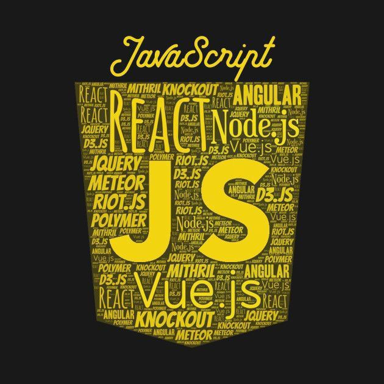

Project 1
Complete
HTML Foundations
Semantic HTML structure, accessibility basics, and document outline.
HTML5
Semantic
A fully responsive webpage built mobile-first — using CSS Grid, Flexbox, fluid typography, accessible touch targets, and the native Popover API for navigation. No hacks. Just clean, modern CSS.

About This Build
This project demonstrates the modern approach to responsive design: starting small, scaling up, and letting content dictate breakpoints — not arbitrary device sizes. 62.73% of all web traffic comes from mobile. This site handles all of it gracefully.
Built with a mobile-first mindset, CSS Grid for macro layout, Flexbox for micro components, and fluid units throughout — no brittle fixed widths in sight.
62%
of traffic is mobile
44px
min touch target size
500%
max zoom (WCAG)
0 JS
for the nav popover
Portfolio
Each project is a milestone built at DecodeLabs — a real-world portfolio piece for future employers.
Semantic HTML structure, accessibility basics, and document outline.

Mobile-first responsive design with Grid, Flexbox, fluid typography and Popover API navigation.

Complete Project 2 to unlock this milestone.
Technical Skills
Grid for the house, Flexbox for the furniture. Two-dimensional architecture meets one-dimensional specialist.
Font sizes that scale smoothly across all viewports using clamp() — no abrupt jumps at breakpoints.
Hamburger menu built with the native HTML Popover API — no JavaScript, keyboard accessible, with a backdrop.
Base styles target mobile. Complexity is added as screen space grows — never taken away.
44x44px touch targets, user-scalable zoom (up to 500%), ARIA labels, and WCAG compliance.
Container Queries and modern CSS features — coding for the device that hasn't been invented yet.
Get In Touch
Open to internship and junior frontend roles. I bring a mobile-first mindset, clean semantic HTML, and a passion for accessible, future-proof interfaces.
ikpeidongesit01@gmail
Location
Akwa ibom, Nigeria
DecodeLab
Intern · Frontend Track